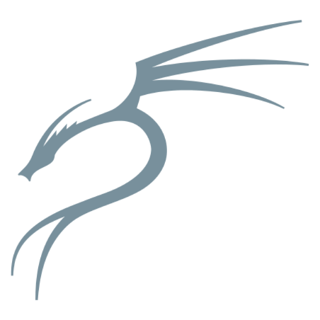
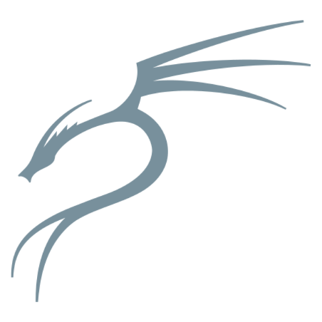

Kali NetHunter 
Kali NetHunter 
Nethunter - это Kali Linux для андроид!Это подсистема позволяет установить и запустить софт написаный под Linux, запустить vnc, пользоваться утилитами, а также имея специальное ядро превращать девайс в hid устройство или переводить внутренний адаптер в режим монитора.Состоит из 3 компонентов:
- Главное приложение
- Терминал
- Chroot (сама система)
Требования:
- Устройство 32/3 ГБ
- Разблокированный загрузчик
- Magisk
- 15ГБ+ для полной и 3 ГБ для минимальной установки
1 Способ
1.Зайдите в Magisk и найдите там модуль NetHunter и модуль Wireless firmware, установите и после перезагрузки у вас уже будут нужные приложения и драйвера!
2.Нажмите на "chroot manger" и выберите скачать, полный или минимальный решать вам но я рекомендую полную установку!Просто ждём от 30 минут до 1,30 часа!
3.Заходим в терминал и пишем apt update && apt upgrade -y, ждём завершение процесса и можем использовать
2 Способ
1.Скачиваем архив отсюда
2.Распаковываем и устанавливаем все приложения
3.Архив с чрутом ложим в корень и убираем -arm64 из названия
4.Заходим в приложение и нажимаем установить "Use sdcard" и выбираем полный или минимальнй смотря что вы скачали
5.Заходим в терминал и пишем apt update && apt upgrade -y, ждём завершение процесса и можем использовать
3 Способ
1.Скачиваем термукс из Google Play
2.Заходим и устанаваливаем git
pkg install git
3.Скачиваем репозиторий и запускаем скрипт
git clone https://github.com/huntmix/TermuxToNethunter
cd TermuxToNethunter
chmod +x main.sh
./main.sh
4.Выбираем какой чрут мы хотим скачать минимальный (3GB+) или полный (20GB+)
5.Все!Скрипт сам скажет если что то ещё понадобится, приложения и чрут сами установятся, а вы сможете использовать как и терминал от Nethunter, так и создав новую сессию в Termux и прописав /nh
Чтобы найти ядро нужно всего лишь загуглить!
Модель вашего телефона nethunter kernel
Если есть результаты читайте и качайте ну а если высвечивает другие телефоны, то увы на ваш нету или он в закромах, здесь я не буду вас учить его собирать есть полно гайдов в интернете и все это желательно нужно делать с ПК!
Гл. Приложение
Обзор возможностей
Mana host
В этом разделе есть возможность сделать мошенническую точку доступа, с помощью которой можно будет просматривать трафик, и создавать фишинг страницы
DeAuth
Подключив адаптер и выбрав его интерфейс, вы можете просканировать ближайшие сети и начать их деауз!
Metasploit payload generator
Данная страница поможет вам быстро сгенерировать полезную нагрузку в выбраном вами формате!
Nmaper
Здесь вы можете вписать нужный вам айпи, выбрать нужные флаги и запустить сканирование!
USB Arsenal
В этом разделе если ваш девайс поддерживается вы сможете превратить его в hid устройство.Дополнительно вы сможете проганять весь трафик через смартфон тоесть проводить MITM атаку!А так же возможность смонтировать ISO образ к примеру для конбута!
CMD HID
После того как вы превратили свой девайс в hid устройство, тут вы сможете передать команды компьютеру прямиком в командную строку, плюсом будет UACBYPASS который обходит окно авторизации администратора в windows!
Rubber Duck
Ещё один раздел связанный с hid!В нем вы сможете превратить телефон в "утку", вы можете напрямую передавать действия компьютеру!Подробнее: hid